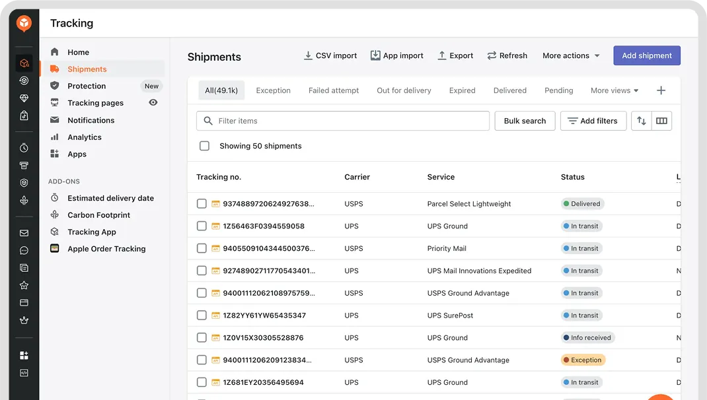

Global Promo currently relies on manual processes to track shipments, update distributors, and monitor delivery status across U.S. and China-origin orders. This proposal outlines a system that integrates Zoho Books with a tracking aggregation platform and automated notification engine to:
The recommended approach leverages Global Promo's existing Zoho One ecosystem, supplemented by AfterShip (a multi-carrier tracking aggregator), to minimize implementation complexity and team retraining. The entire system can be built using no-code configuration tools — no custom software development is required.
This proposal defines what should be built and why. The technical configuration — setting up Zoho Flow workflows, AfterShip rules, and dashboard views — should be carried out by the appropriate resource(s):
| Role | Responsibility |
|---|---|
| Marketing & System Specialist | System design, workflow architecture, process documentation, quality control, and ongoing optimization. Defines requirements and validates that the system works as intended. |
| Zoho support / certified consultant | Hands-on configuration of Zoho Flow automations, AfterShip integration, webhook setup, and email template buildout. Zoho provides phone and email technical support, an active community platform, and a network of certified partners if deeper assistance is needed. |
| India-based execution team | Currently assists with email campaigns. Can be expanded to support data entry tasks during migration, email template formatting, and QC verification under direction from the Specialist. May benefit from Zoho-specific training to increase their capacity. |
The current workflow consists of five core manual tasks performed by CSRs for every shipment. The proposed system automates four of the five for both U.S. and China shipments — using ShippingEasy integration for U.S. orders and barcode scanning for China orders — leaving only exception handling as a manual task.
| Task | Current Process | Proposed Process | Status |
|---|---|---|---|
| 1. Enter tracking number | CSR manually types tracking number into Excel | Auto-captured from ShippingEasy into Zoho Books via Zoho Flow at label creation | Automated |
| 2. Check tracking status | CSR manually visits carrier websites to look up status | AfterShip monitors UPS, FedEx, and DHL automatically | Automated |
| 3. Send "shipped" email | CSR manually drafts and sends email to distributor | Triggered automatically when tracking number is registered | Automated |
| 4. Send "delivered" email | CSR manually drafts and sends email to distributor | Triggered automatically when carrier confirms delivery | Automated |
| 5. Handle exceptions | CSR discovers issues manually during routine status checks | System flags exceptions and alerts CSR — resolution still requires human judgment | Remains manual |
U.S. result: 4 of 5 tasks automated (80%). Full automation is achievable immediately by integrating ShippingEasy with Zoho Books. Note: this percentage is based on task count, not measured time. Some tasks (e.g., checking carrier websites multiple times a day) consume more time than others. Actual time savings should be measured during Phase 5 to validate the impact.
| Task | Current Process | Proposed Process | Status |
|---|---|---|---|
| 1. Enter tracking number | Freight forwarder provides tracking number manually; CSR enters it into Excel | China team scans the barcode on the freight forwarder's shipping label using a Zoho Creator mobile form. The tracking number is captured directly into Zoho Books — no manual typing required. | Automated via barcode scan |
| 2. Check tracking status | CSR manually visits carrier websites to look up status | AfterShip monitors DHL and other carriers automatically once tracking is in the system | Automated |
| 3. Send "shipped" email | CSR manually drafts and sends email to distributor | Triggered automatically when tracking number is entered into Zoho Books | Automated |
| 4. Send "delivered" email | CSR manually drafts and sends email to distributor | Triggered automatically when carrier confirms delivery | Automated |
| 5. Handle exceptions | CSR discovers issues manually during routine status checks | System flags exceptions and alerts CSR — resolution still requires human judgment | Remains manual |
China result: 4 of 5 tasks automated (80%). Barcode scanning eliminates manual tracking number typing — the primary source of data entry errors — without requiring the freight forwarder to change their process. The only remaining manual task is exception handling, which still requires human judgment.
Across both U.S. and China shipments, the 80% manual work reduction target is achievable. U.S. shipments are automated via ShippingEasy integration. China shipments are automated via barcode scanning of the freight forwarder's shipping labels. In both cases, 4 of 5 repetitive tasks are eliminated, leaving only exception handling — which is itself improved by proactive system alerts. Note: these percentages are based on task count. Some tasks (e.g., checking carrier websites multiple times a day) consume more time than others. Actual time savings should be measured during Phase 5 to validate the impact.
| Pain Point | Impact | Frequency |
|---|---|---|
| Manual tracking entry into Excel | Data entry errors, duplication of effort | Every shipment |
| No centralized shipment view | CSRs lack visibility; management cannot monitor at a glance | Ongoing |
| Manual carrier website checks | Time-consuming; status updates are delayed | Multiple times/day |
| Manual distributor emails | Inconsistent communication; missed notifications | Every shipment milestone |
| Dual-origin shipping (China + U.S.) | Multiple carriers, multiple tracking formats | Every shipment |
The proposed system consists of four integrated layers:
| Component | Recommended Tool | Purpose | Why This Tool |
|---|---|---|---|
| Order Management | Zoho Books (existing) | Source of truth for orders & tracking numbers | Already in use; no migration needed |
| U.S. Shipping Platform | ShippingEasy (existing) | U.S. label creation and tracking number generation | Already in use for U.S. orders; supports API integration with Zoho Books via Zoho Flow, enabling automatic tracking number capture |
| Automation Engine | Zoho Flow | Orchestrate data movement between systems | Native Zoho integration; no-code/low-code; included in Zoho One |
| Tracking Aggregator | AfterShip | Multi-carrier tracking, status normalization | Supports 1,200+ carriers including Global Promo's carriers (UPS, FedEx, DHL); webhook support; branded tracking pages |
| Dashboard | AfterShip Dashboard / Zoho Analytics | Centralized shipment visibility | AfterShip provides a built-in shipment dashboard; Zoho Analytics can supplement with custom reports |
| Email Notifications | AfterShip Notifications + Zoho Flow | Automated distributor-facing emails | AfterShip handles delivery-event emails; Zoho Flow handles internal alerts and exception escalation |
The tools below are the only new costs this proposal introduces. Everything else (Zoho Books, Zoho Flow, Zoho Creator, Zoho Analytics) is already included in Global Promo's Zoho One subscription at no additional charge.
| Service | Plan | Estimated Cost | Why This Plan |
|---|---|---|---|
| AfterShip | Essentials (up to 1,200 shipments/month) | ~$11/month | Recommended — more than sufficient for 120–150 shipments/month |
| AfterShip | Pro (up to 2,000 shipments/month + advanced notifications) | ~$119/month | Only needed if volume grows significantly or advanced features are required |
| Tool | Status | Notes |
|---|---|---|
| Zoho Books | Already in use | No new subscription required. Global Promo's existing system of record. |
| Zoho CRM | Already in use | Used daily by the sales team. Potential future integration point for linking distributor records to shipment tracking. |
| ShippingEasy | Already in use | Used for U.S. order label creation. Supports API integration with Zoho Books — key enabler for automating U.S. tracking number capture. |
| Zoho Flow | Included in Zoho One | No additional cost. Already available as part of Global Promo's existing Zoho One subscription. Not currently in active use. |
| Zoho Creator | Included in Zoho One | No additional cost. Used to build the barcode scanning mobile form for the China team's tracking number capture. |
| AfterShip | New subscription | Required for multi-carrier tracking aggregation. The only new expense. Essentials plan (~$11/month) is sufficient for 120–150 shipments/month. |
| Zoho Analytics | Included in Zoho One | No additional cost. Already available. Can be used for custom reporting beyond AfterShip's built-in dashboard. |
Since Global Promo already subscribes to Zoho One, Zoho Flow, Zoho Creator, and Zoho Analytics are included at no additional cost. The only new expense is AfterShip, starting at ~$11/month.
A key requirement is a centralized dashboard with real-time shipment status — replacing the current process of checking carrier websites individually and referencing Excel. The proposed system provides two layers of visibility:
| Dashboard | Platform | Purpose | Who Uses It |
|---|---|---|---|
| Real-time shipment tracking | AfterShip Dashboard | The primary day-to-day view. Shows all active shipments in one place with real-time status from all carriers (UPS, FedEx, DHL). Can be filtered by status (in transit, delivered, exception), carrier, and origin country. Updates automatically as AfterShip receives carrier data. | CSR team, operations |
| Reporting & trends | Zoho Analytics (included in Zoho One) | Supplemental reporting layer for management. Tracks trends over time: average delivery times by carrier, exception rates, shipment volume by month, U.S. vs. China performance comparisons. | Management |
The AfterShip Dashboard is the single, centralized location where anyone on the team can see the status of every active shipment — no more checking individual carrier websites or referencing a spreadsheet.

AfterShip Tracking Dashboard: all shipments, carriers, and statuses in a single view. Source: aftership.com
Step 1 — Order Creation (Sales): The sales team creates a Sales Order or Invoice in Zoho Books. Distributor contact info (name, email) is captured on the order. Order status is set to Confirmed. Note: at this stage, no tracking number exists yet — the order has not shipped.
Step 2 — Shipment Dispatch (Warehouse): This is a separate step performed by warehouse staff, not sales. The carrier generates the tracking number — Zoho Books does not. How the tracking number reaches Zoho Books depends on the shipment origin:
Getting the tracking number into Zoho Books accurately is the most important step in the entire process. If this step fails — a wrong number, a missed entry — none of the downstream automation works. That is why this proposal recommends eliminating manual entry wherever possible (see Tracking Number Entry Automation below).
The objective is to minimize — or better yet, eliminate — manual tracking number entry. Manual data entry is inherently error-prone: transposed digits, incorrect carrier assignments, and missed entries create downstream failures that undermine the entire tracking system. A single wrong digit means the distributor receives no updates, the dashboard shows incorrect status, and a CSR has to manually investigate and correct the error.
Since tracking numbers are generated by the carrier at label creation, the question is whether Global Promo's warehouses can capture them automatically:
| Origin | Current Label Creation | Automatable? | Recommended Action |
|---|---|---|---|
| U.S. — via ShippingEasy | Labels created in ShippingEasy (UPS, FedEx) | Yes — fully automatable | ShippingEasy supports API integration. Connect it to Zoho Books via Zoho Flow so tracking numbers are written to the order record automatically at label creation. Zero manual entry. |
| U.S. — via carrier website | Labels created directly on UPS or FedEx websites | Not automatable as-is | Creating labels on carrier websites has no connection to Zoho Books, so tracking numbers must be entered manually. The fix: stop using carrier websites for label creation and route all U.S. shipments through ShippingEasy, which can sync automatically. |
| China — via freight forwarder (barcode scan) | Freight forwarder creates labels with tracking numbers; China team currently has to type them into the system manually | Automatable via barcode scanning | Every shipping label contains a barcode that encodes the tracking number. Rather than typing the number manually, the China team can scan the barcode on the freight forwarder's label using a smartphone or handheld scanner. A Zoho Creator form (included in Zoho One) with a barcode scan field can capture the tracking number and write it directly to the Zoho Books order record — eliminating manual typing and the data entry errors that come with it. This requires no changes from the freight forwarder. |
Recommendation: U.S. shipments can be automated immediately by integrating ShippingEasy with Zoho Books via Zoho Flow. For China shipments, barcode scanning of the freight forwarder's shipping labels eliminates manual tracking number entry without requiring the freight forwarder to change their process. A simple Zoho Creator mobile form with a barcode scan field gives the China team a fast, error-free way to capture tracking numbers into Zoho Books.
Regardless of whether a shipment originates in the U.S. or China, both paths converge at Zoho Books. From that point forward, AfterShip handles all tracking identically:
U.S. shipments:
China shipments:
From Zoho Books, both follow the same path:
AfterShip does not know or care how the tracking number arrived in Zoho Books. It simply receives a tracking number, identifies the carrier (UPS, FedEx, DHL, etc.), and begins polling for status updates. The monitoring, dashboard updates, and automated distributor notifications work exactly the same way for a package shipped from a U.S. warehouse via ShippingEasy as they do for a package shipped from China via a freight forwarder. This is the advantage of using Zoho Books as the single convergence point — everything downstream is unified.
Step 3 — Tracking Number Detection: Zoho Flow monitors Zoho Books for updated tracking fields using either:
Zoho Flow extracts: tracking number, carrier name, distributor email, and order ID.
Step 4 — Tracking Registration: Zoho Flow sends the tracking number, carrier name, distributor email, and order details to AfterShip. AfterShip begins checking the carrier for status updates automatically.
Step 5 — Status Monitoring: AfterShip checks carrier systems at regular intervals (typically every 3–6 hours; more frequently near delivery). When a status change is detected, AfterShip fires a webhook to Zoho Flow. Status events are normalized into standard categories: In Transit, Out for Delivery, Delivered, Exception, Expired.
Step 6 — Distributor Notification: Based on the status event, the appropriate email is triggered (see Automation Logic below). Emails are sent via AfterShip's built-in notification system or via Zoho Flow + Zoho Books email templates.
| Trigger Event | Condition | Action | Recipient |
|---|---|---|---|
| New tracking number added in Zoho Books | Tracking field changes from empty to populated | 1. Register tracking in AfterShip 2. Send "Shipment Created" email |
Distributor |
| AfterShip status → In Transit | First carrier scan detected | Send "Your order is on its way" email | Distributor |
| AfterShip status → Exception | Carrier reports delay, failed attempt, or customs hold | 1. Send "Shipment Delay" email to distributor 2. Send internal alert to CSR team |
Distributor + CSR |
| AfterShip status → Out for Delivery | Carrier reports out for delivery | Send "Out for Delivery" email | Distributor |
| AfterShip status → Delivered | Carrier confirms delivery | 1. Send "Delivered" email 2. Update Zoho Books order status to Fulfilled |
Distributor |
| AfterShip status → Expired | No update for 30+ days | Send internal alert to CSR for manual follow-up | CSR team |
| Tracking number invalid | AfterShip cannot detect carrier or tracking fails validation | Send internal alert to CSR for correction | CSR team |
| Edge Case | How It's Handled |
|---|---|
| Multiple packages per order | Zoho Books supports multiple tracking numbers per shipment. Each tracking number is registered separately in AfterShip. Distributor receives a notification per package. |
| China shipments with carrier handoff (e.g., China Post/EMS → USPS) | AfterShip handles multi-leg tracking natively. The system tracks through carrier handoffs without manual intervention. |
| Incorrect tracking number entered | AfterShip returns an error via webhook. Zoho Flow sends an internal alert to the CSR team to correct the entry. |
| Distributor has multiple orders shipping simultaneously | Each order's tracking is registered independently. Emails reference the specific order number for clarity. |
| Carrier API downtime | AfterShip retries automatically. If status is unavailable for >24 hours, an internal alert is triggered. |
| Order cancelled after shipment | CSR manually marks the AfterShip tracking as inactive. Zoho Flow stops further notifications for that tracking number. |
Each automated email should include:
Each phase below identifies what needs to happen and who is responsible. The Marketing & System Specialist defines requirements, oversees quality, and validates outcomes. Technical configuration is carried out by a Zoho-certified consultant or IT resource, with the India-based team assisting on execution tasks as directed.
| Phase | Duration | Effort Level |
|---|---|---|
| Phase 1: Foundation | 2 weeks | Low — configuration and training |
| Phase 2: Automation & Tracking | 2 weeks | Medium — integration work and testing |
| Phase 3: Notifications | 2 weeks | Medium — template design and testing |
| Phase 4: Dashboard & Reporting | 2 weeks | Low — configuration and access setup |
| Phase 5: Optimization | 2 weeks | Low — monitoring and refinement |
| Total | ~10 weeks |
Note: These durations assume a Zoho consultant or IT resource is engaged and available on a regular basis. Since Global Promo does not currently have a dedicated IT person, the actual pace will depend on consultant availability and scheduling. Phases can overlap, and Phase 1 can begin immediately with no dependencies.
| Risk | Impact | Likelihood | Mitigation |
|---|---|---|---|
| China team currently does not use Zoho apps and relies on manual processes | High — breaks the data flow at the source | Medium | Management is open to bringing the China team onto Zoho. The barcode scanning workflow (via Zoho Creator mobile form) is simple and requires minimal training — scan the label, select the order, submit. This is a low-barrier entry point for onboarding the China team. |
| China freight forwarder tracking numbers may use varying formats (DHL, or forwarder-specific carriers) | Low — UPS, FedEx, and DHL are fully supported by AfterShip, but freight forwarder tracking numbers may use less common formats | Medium | Test freight forwarder tracking numbers early in Phase 2 to confirm AfterShip recognizes them correctly |
| Zoho Books API rate limits | Medium — could delay sync during high-volume periods | Low | Implement queuing in Zoho Flow; batch API calls during peak |
| AfterShip service outage | Medium — tracking updates paused temporarily | Low | AfterShip guarantees 99.9% uptime (very rare outages). If it is temporarily unavailable, Zoho Flow will automatically retry until it connects. |
| Email deliverability (spam filters) | Medium — distributors miss notifications | Medium | By default, AfterShip sends notification emails from its own address (e.g., noreply@aftership.com). Distributors may not recognize this sender, and spam filters are more likely to block it. To avoid this, configure AfterShip to send from Global Promo's own address (e.g., tracking@globalpromo.com) so emails look familiar and trustworthy. Keep emails short with clear subject lines. As a backup, AfterShip also provides a branded tracking page — a webpage with Global Promo's logo where distributors can check shipment status anytime, even if they miss an email. |
| Team resistance to new workflow | High — if the team reverts to Excel, the entire system goes unused | Medium | Involve CSR team early in testing; demonstrate time savings; provide clear documentation |
The proposed system replaces Global Promo's manual, Excel-based tracking process with an automated pipeline built on tools the team already uses (Zoho Books) and a purpose-built tracking platform (AfterShip). The key outcomes are:
The phased rollout minimizes disruption, allows for testing and feedback at each stage, and can be executed within 8–10 weeks.